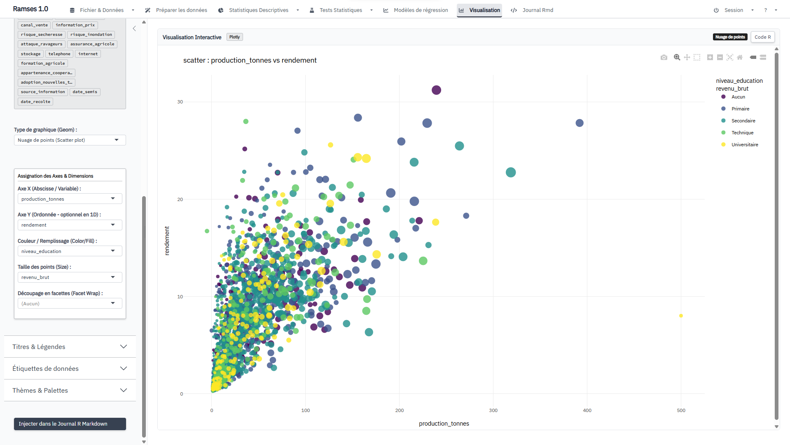
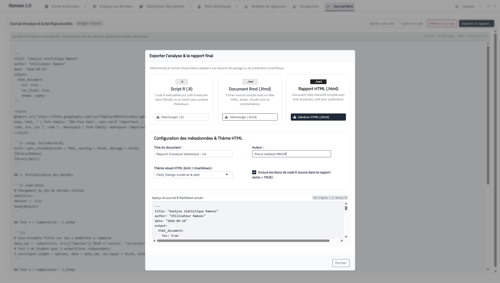

Ramses
Interface graphique moderne pour l'analyse statistique et la reproductibilité en R

Le projet
Ramses cherche à rapprocher deux mondes : la simplicité d'une interface graphique et la rigueur du code R. L'utilisateur choisit ses variables et ses paramètres dans une interface Shiny, tandis que les analyses peuvent être consignées dans un journal R Markdown.
Le projet est actuellement en version 0.1.0. Il constitue une base fonctionnelle destinée à évoluer progressivement, notamment vers une architecture de résultats plus homogène et une couverture méthodologique plus large.
Fonctionnalités réellement disponibles
Importation & données
CSV, TXT, TSV, Excel (.xlsx/.xls), SPSS (.sav), Stata (.dta) et RDS. Aperçu interactif avec recherche, tri et pagination via DT.
Statistiques descriptives
Variables quantitatives, fréquences qualitatives, tableaux croisés et matrices de corrélation Pearson/Spearman.
Visualisation
8 types : nuage de points, barres, boxplot, violon, histogramme, ligne, densité et heatmap, avec axes, couleur, taille et facettes.
Inférence & modèles
Shapiro-Wilk, KS, Bartlett, Fligner, t-tests, Wilcoxon, ANOVA à un facteur, Kruskal-Wallis, Chi², Fisher, McNemar, corrélations, régression linéaire et logistique.
Reproductibilité
Les analyses peuvent être ajoutées au Journal R Markdown. Le journal peut être exporté en .R, .Rmd ou rapport .html. L'objectif n'est donc pas de remplacer R par une boîte noire, mais de fournir une porte d'entrée graphique vers une analyse qui reste inspectable.

Positionnement
Ramses est inspiré par l'idée d'une alternative moderne à R Commander : interface web, composants Bootstrap 5, graphiques interactifs et génération de code. Il ne cherche pas encore à reproduire toute la couverture fonctionnelle de Rcmdr, jamovi ou SPSS.
Certaines fonctionnalités annoncées dans d'anciennes versions de la documentation ne sont pas encore implémentées : drag-and-drop, ANOVA factorielle, tests de proportions, Levene, Odds Ratios dédiés et véritable système de provenance analytique.
Démarrage rapide
if (!requireNamespace("remotes", quietly = TRUE)) install.packages("remotes")
remotes::install_github("census-specs/Ramses")
library(Ramses)
run_app()Consultez le guide d'installation, puis le tutoriel pratique.